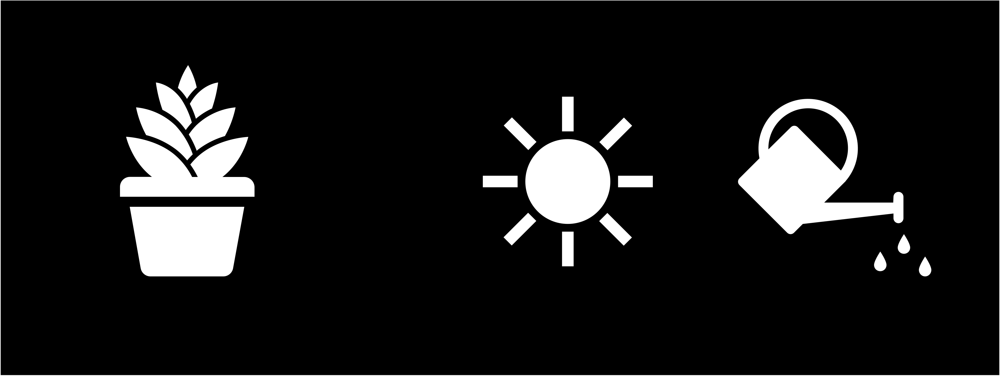
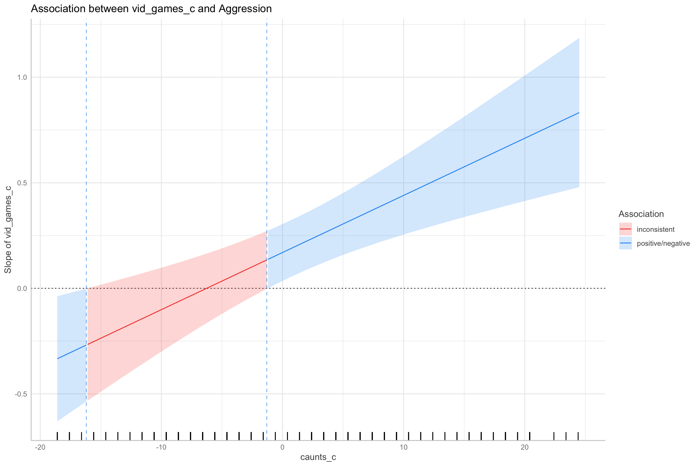

Interactions 1
Princeton University
2023-11-26
Packages
Today
Testing interactions/moderation analysis
- Categorical x Continuous
- Continuous x Continuous
Interactions
Interactions
- Two variables can have joint effects, or interact with each other
What is a moderator?
- A moderator variable Z (i.e., water) is a variable that alters the strength of the relationship between X and Y (sunshine -> growth)

- To test for moderation we can add the interaction between Z and X to our model
\[ \hat{Y}=b_{0}+b_{1}X (sunshine)+ b_2Z (water) + b_3X*Z\]
What do interactions look Like?

Interaction shapes
Disordinal
- Crossover
Interaction shapes
- Ordinal

Interaction shapes
- Ordinal

Categorical x Continuous Interactions
Today’s dataset
Student evaluations for a sample of 463 courses taught by 94 professors from the University of Texas at Austin
Six students rated the professors’ physical appearance
Research question
Does Age and Sex (Males, Females) of the instructor influence instructor ratings?
- DV: Evals
- IV:
- Age (continuous)
- Gender (categorical)
- Age*Gender interaction
Note
A categorical x continuous regression model is an ANCOVA
Scatter plot
How to conduct moderation analysis?
- Moderation analysis can be conducted by adding one or multiple interaction terms in a regression analysis
- Z is a moderator for the relation between X and Y, we can fit a regression model
\[\begin{eqnarray*} Y & = & b_{0}+b_{1}*X+b_{2}*Z+b_{3}*X*Z+e \\ & = & \begin{cases} b_{0}+b_{1}*X+e & \mbox{For females}(Z=0)\\ b_{0}+b_{2}+(b_{1}+b_{3})*X+e & \mbox{For males}(Z=1) \end{cases} \end{eqnarray*}\]
When Z=0 (females),the effect of X on Y is \(b_1+b_3∗0=b_1\)
When Z=1 (males), the effect of X on Y is \(b_1 + b_3*(1)\)
Steps for moderation analysis
A moderation analysis typically consists of the following steps:
Compute the interaction term XZ=X*Z
Fit a multiple regression model with X, Z, and X*Z as predictors
Test whether the regression coefficient for XZ (interaction) is significant
3.1 If so, interpret the moderation effect
Display the moderation effect graphically
Steps for moderation analysis
- Compute the interaction term XZ=X*Z
Steps for moderation analysis
Center continuous variables
Centering solves two problems:
Interpretation
Multicollinearity
Steps for moderation analysis
- Fit a multiple regression model with X, Z, and X*Z as predictors
- Test whether the regression coefficient for X*Z is significant
Interpretations
\[\hat{Y}= b_0 + b_1 X + b_2 Z + b_3 X*Z\]
where ( \(X\) ) is a continuous predictor and ( \(Z\) ) is a dummy coded categorical predictor.
- \(b_0\): the intercept, or the predicted outcome when X = at mean and Z=0
- \(b_1\): the slope of \(X\), for a one unit change in \(X\) the predicted change in \(Y\) at \(Z = 0\)
- \(b_2\): The offset/difference in the intercept for a one unit change in \(Z\) the predicted change in Y at X = 0 (or at it’s mean)
- \(b_3\): The interaction of \(X\) and \(Z\), the offset/difference in slope for \(Z\) for a one-unit increase in \(X\) (or vice versa)
Interpretations
Interpretations
Interpretations
Interpretations
Deviation coding
Moderation: simple slopes
If the interaction is significant, then you usually ignore the other individual effects (age and gender)
So what do I do if my interaction is significant?
- A simple slopes/spotlight analysis
Steps for Moderation Analysis
Obtain simple slopes
Conditional analysis looking at the slope between different levels of the moderator
- Test if slope \(\neq\) 0
Steps for moderation analysis
Steps for moderation analysis
A significant slope in one condition and not in another does not mean there is an interaction
- Just testing if each slope is \(\neq\) 0
Must test the interaction!
Interactions
- You should only be following up interactions if significant!
Visualize categorical by continuous interactions
Visualize Categorical by Continuous Interactions
- Parallel slopes models still allow for different intercepts but force all lines to have the same slope
Parallel slopes
Model Comparisons
- Test model without interaction to model with interaction
Parallel Slopes
Categorical x Continuous Write–up
Tip
All continuous predictors were mean-centered and deviation coding was used for categorical predictors. The results of the regression indicated that the model significantly predicted evaluation scores (R2 =0.05, F(3, 459) = 8.29, p <.001, adj. R2 = 0.05) accounting for 5% of the variance. Age was a significant negative predictor of scores, b = -0.01, SE = .003, 95% CI [-0.02, -0.01], t = -3.89, p < .001, with increases in age being associated with lower evals. Gender was also significant, b = -0.208, SE = .05, 95% CI [-0.312, -0.105], t = -3.95, p < .001, with women (M = 4.04) having lower evals than men (M =4.24). Importantly, there was a significant interaction between age and gender, b = -0.01, SE = .01, 95% CI [-0.02, -0.003], t = -2.45, p < .001). A simple slopes analysis indicated a significant slope for women, b = -0.02, SE = 0.004, 95% CI [-0.026, -0.009], t = -3.92, p < .001, but not men, b = 0.004, SE = 0.003, 95% CI [-0.01, 0.002], t = -1.23, p = 0.22. While age does not seem to affect evaluation scores for men, evaluation scores are poorer for older women.
Continuous x Continuous Interactions
Today’s other dataset
Do violent video games make people aggressive?
DV: Aggression
IV:
- Callous unemotional traits (moderator)
- Number of hours spent playing video games per week
- Callous unemotional traits*Number of hours spent playing video games per week
Continuous x Continuous Interactions
Continuous x Continuous Interactions
Centering
- Can reduce multicollinearity
Interpretation Continuous x Continuous Interactions
\[\hat{Y}= b_0 + b_1 X + b_2 Z + b_3 X*Z\]
where ( \(X\) ) is a continuous predictor and ( \(Z\) ) is a continuous predictor.
- \(b_0\): the intercept, or the predicted outcome when X = 0 and Z=0 (or at their means)
- \(b_1\): the simple effect or slope of \(X\), for a one unit change in \(X\) the predicted change in \(Y\) at \(Z = 0\) (or at its mean)
- \(b_2\): The simple effect or slope of \(Z\), for a one unit change in \(Z\) the predicted change in Y at X = 0 (or at its mean)
- \(b_3\):The interaction of \(X\) and \(Z\), the change in the slope of \(X\) for a one-unit increase in \(Z\) (or vice versa)
Interpretation Continuous x Continuous Interactions
Interpretation Continuous x Continuous Interactions
Interpretation Continuous x Continuous Interactions
Interpretation Continuous x Continuous Interactions
Continuous X Continuous Interactions
If the Z (moderator variable) was categorical, you would be checking if separate groups (levels) have different slopes for the non-categorical variable
However, we cant do that with continuous x continuous interactions
Decomposing Continuous X Continuous Interactions: Spotlight Analysis
For continuous moderator variables, you “create” low, average, and high groups
Low groups are people who are one SD below the mean
Average groups are people are at the mean
High groups are people who are one SD above the mean
Probing Interactions: Spotlight Analysis
Low/below mean created by SUBTRACTING 1 SD
High/above mean created by ADDING 1 SD
The rule is that we have to bring them to the middle because we centered so that zero is the middle
Spotlight/simple slopes analysis
- At average levels of callousness, the association between hours played and aggression is positive, b = .17
- At high levels of callousness, the strength of hours of video games predicting aggression is the strongest, b = 0.43
Probing interactions
- Use
interact_plotfrom theinteractions
Probing Interactions
ggpredict
Probing interactions: Johnson-Neyman Plot
Floodlight analysis on the whole range of the moderator
- Tests the slope at each observation of the moderator
Probing interactions: Johnson-Neyman Plot
The association between `vid_games_c` and `Aggression` is negative for
values of `caunts_c` lower than -16.20 and positive for values higher
than -1.30. Inside the interval of [-16.20, -1.30], there were no clear
associations. 
| vid_games_c | caunts_c | Slope | conf.low | conf.high | p.value |
|---|---|---|---|---|---|
| slope | -18.6 | -0.3337320 | -0.6302354 | -0.0372286 | 0.5029953 |
| slope | -17.6 | -0.3066698 | -0.5910010 | -0.0223387 | 0.5879292 |
| slope | -16.6 | -0.2796076 | -0.5519214 | -0.0072938 | 0.7071445 |
| slope | -15.6 | -0.2525454 | -0.5130128 | 0.0079219 | 0.8603115 |
| slope | -14.6 | -0.2254833 | -0.4742998 | 0.0233333 | 1.0000000 |
| slope | -13.6 | -0.1984211 | -0.4357799 | 0.0389378 | 1.0000000 |
| slope | -12.6 | -0.1713589 | -0.3975433 | 0.0548256 | 1.0000000 |
| slope | -11.6 | -0.1442967 | -0.3596104 | 0.0710171 | 1.0000000 |
| slope | -10.6 | -0.1172345 | -0.3219646 | 0.0874956 | 1.0000000 |
| slope | -9.6 | -0.0901723 | -0.2847782 | 0.1044336 | 1.0000000 |
| slope | -8.6 | -0.0631101 | -0.2480262 | 0.1218060 | 1.0000000 |
| slope | -7.6 | -0.0360479 | -0.2118081 | 0.1397122 | 1.0000000 |
| slope | -6.6 | -0.0089857 | -0.1762247 | 0.1582532 | 1.0000000 |
| slope | -5.6 | 0.0180764 | -0.1413409 | 0.1774937 | 1.0000000 |
| slope | -4.6 | 0.0451386 | -0.1073294 | 0.1976066 | 1.0000000 |
| slope | -3.6 | 0.0722008 | -0.0742708 | 0.2186724 | 1.0000000 |
| slope | -2.6 | 0.0992630 | -0.0422840 | 0.2408100 | 1.0000000 |
| slope | -1.6 | 0.1263252 | -0.0114862 | 0.2641366 | 1.0000000 |
| slope | -0.6 | 0.1533874 | 0.0180016 | 0.2887731 | 0.5029953 |
| slope | 0.4 | 0.1804496 | 0.0461251 | 0.3147740 | 0.1715909 |
| slope | 1.4 | 0.2075118 | 0.0728712 | 0.3421523 | 0.0545526 |
| slope | 2.4 | 0.2345739 | 0.0982114 | 0.3709365 | 0.0173187 |
| slope | 3.4 | 0.2616361 | 0.1222330 | 0.4010393 | 0.0058360 |
| slope | 4.4 | 0.2886983 | 0.1449861 | 0.4324105 | 0.0022012 |
| slope | 5.4 | 0.3157605 | 0.1666209 | 0.4649001 | 0.0009532 |
| slope | 6.4 | 0.3428227 | 0.1872151 | 0.4984303 | 0.0004810 |
| slope | 7.4 | 0.3698849 | 0.2068956 | 0.5328742 | 0.0002813 |
| slope | 8.4 | 0.3969471 | 0.2258419 | 0.5680523 | 0.0001865 |
| slope | 9.4 | 0.4240093 | 0.2440593 | 0.6039593 | 0.0001439 |
| slope | 10.4 | 0.4510715 | 0.2617204 | 0.6404225 | 0.0001252 |
| slope | 11.4 | 0.4781336 | 0.2788311 | 0.6774362 | 0.0001178 |
| slope | 12.4 | 0.5051958 | 0.2955640 | 0.7148277 | 0.0001178 |
| slope | 13.4 | 0.5322580 | 0.3119161 | 0.7525999 | 0.0001178 |
| slope | 14.4 | 0.5593202 | 0.3279754 | 0.7906650 | 0.0001178 |
| slope | 15.4 | 0.5863824 | 0.3436964 | 0.8290684 | 0.0001178 |
| slope | 16.4 | 0.6134446 | 0.3592578 | 0.8676313 | 0.0001178 |
| slope | 17.4 | 0.6405068 | 0.3745389 | 0.9064746 | 0.0001178 |
| slope | 18.4 | 0.6675690 | 0.3896822 | 0.9454557 | 0.0001178 |
| slope | 19.4 | 0.6946311 | 0.4046855 | 0.9845768 | 0.0001178 |
| slope | 20.4 | 0.7216933 | 0.4195149 | 1.0238718 | 0.0001220 |
| slope | 22.4 | 0.7758177 | 0.4487827 | 1.1028527 | 0.0001329 |
| slope | 23.4 | 0.8028799 | 0.4633260 | 1.1424338 | 0.0001382 |
| slope | 24.4 | 0.8299421 | 0.4777436 | 1.1821405 | 0.0001439 |
Continuous x continuous write-up
Tip
Important
All continuous predictors were mean-centered. The results of the regression indicated that the model significantly predicted violent behavior scores (R2 = 0.38,F(3, 438) = 88.46, p < .001, adj.R2 = 0.37) accounting for 37% of the variance. Hours was a significant positive predictor of violence, b = 0.17, SE = .07, 95% CI [0.04, 0.3], t = 2.48, p < .014, with increases in hours played being associated with higher levels of violence. Callous traits was also a positive predictor of violence, b = 0.76, SE = .05, 95% CI [0.51, 0.65], t = 15.37, p < .001, with increases in callous traits being associated with higher levels of violence. Importantly, there was a significant interaction between hours played and callous traits, b = 0.03, SE = .01, 95% CI [0.01, 0.04], t = 3.88, p < .001). Following up with a simple slopes/spotlight analysis showed the effect was significant at average levels of callous traits, b = -0.42, SE= 0.09, t = 4.64, p < .0001 and high levels of callous traits, b = -0.42, SE= 0.09, t = 4.64, p < .0001, but not at low levels of callous traits, b = -0.09, SE= 0.10, t = -0.911, p = 0.36 Thus, hours playing video games and violent scores is moderated by callous traits. Specifically, the relationship between hours playing video games and violent cognition is strongest for those with high callous traits.
Continuous x continuous write-up
- JN Technique
Tip
Since the moderator (callous traits) was continuous, we looked for the turning points for where exactly, in the value of the moderator, the effect of the independent variable (Hours) turns from non-significance to significance (for a pre-specified significance level of 0.05). This is done using the Johnson–Neyman technique. The Johnson–Neyman technique showed that at the association between hours played and aggression is positive for values higher than -1.30. Inside the interval of [-16.20, -1.30], there were no clear associations. There is a more detrimental effect between hours played and aggression at high levels of callous traits.
Moderation: MeMoBootR
We can use the
MeMoBootRto complete the entire processing, including data screening for us!You would enter the raw variables, as the centering is completed for you
Moderation: MeMoBootR
Power
Power
InteractionPoweR(Baranger et al. 2023)
All we need is:
Correlations
X-Y
Z-Y
XZ-Y
X-Z
Next time
- Categorical x categorical interactions
Cited
PSY 503: Foundations of Statistics in Psychology